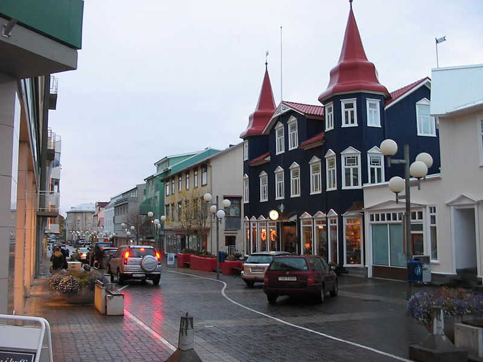

Islandia, oficialmente la República de Islandia, es un país soberano localizado en el extremo noroeste de Europa, cuyo territorio abarca la isla homónima y algunas pequeñas islas e islotes adyacentes en el océano Atlántico, entre el resto de Europa y Groenlandia.
Geografía

Su territorio abarca la isla homónima y algunas pequeñas islas e islotes adyacentes en el océano Atlántico, entre el resto de Europa y Groenlandia. Cuenta con una población de cerca de 350.000 habitantes y un área de 103.000 km². A causa de su localización en la dorsal mesoatlántica, es un país con gran actividad volcánica y geológica, factor que afecta en gran medida al paisaje del territorio islandés. El interior del país consiste en una meseta caracterizada por desiertos, montañas, glaciares y ríos glaciales que fluyen hacia el mar a través de las tierras bajas. Gracias a los efectos de la corriente del Golfo, tiene un clima templado en relación a su latitud y provee un entorno habitable.
Historia
El primer asentamiento humano en Islandia data del año 874 cuando, de acuerdo con el Landnámabók o «Libro del asentamiento», el líder noruego Ingólfur Arnarson se convirtió en el primer colono permanente de la isla. Otros navegantes, como el vikingo feroés Naddoddr, posible descubridor, visitaron la isla hacia el año 860 para pasar en ella el invierno. Sin embargo, nunca fundaron allí un asentamiento permanente. A través de los siglos siguientes, grupos humanos de origen nórdico y gaélico se asentaron en Islandia. Hasta el siglo XX, la población islandesa dependía de la pesca y la agricultura, y desde 1262 a 1944 formó parte del reino de Noruega y, posteriormente, de Dinamarca. En el siglo XX consiguió su independencia y la economía islandesa se desarrolló rápidamente, a pesar de su aislamiento del mundo debido a su ubicación geográfica.
Economía
Hoy en día cuenta con una economía de mercado, con impuestos relativamente bajos comparados con otros miembros de la OCDE,10 manteniendo un estado de bienestar que provee asistencia sanitaria universal y educación superior gratuita a sus ciudadanos.11 En años recientes se convirtió en uno de los países más acaudalados, y en 2009 fue clasificado por la ONU como el tercer país más desarrollado del mundo.
En 2008, el sistema financiero islandés sufrió un colapso, causando una fuerte contracción económica y manifestaciones que llevaron a adelantar las elecciones parlamentarias, en las que Jóhanna Sigurðardóttir ganó el puesto de primera ministra. Paralelamente cobró importancia la conocida como Revolución Islandesa, una serie de protestas y movimientos de organización ciudadana que, en conjunto con el nuevo gobierno, resultó en el encausamiento del anterior Primer Ministro de Islandia durante la crisis, Geir Haarde, dos referendos para decidir sobre el pago de la deuda externa de los bancos nacionales y un proceso ciudadano que desembocase en cambios en la Constitución que culminó en un borrador constitucional el 29 de julio de 2011 a debatirse en el Parlamento.